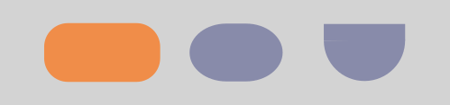
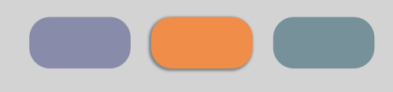
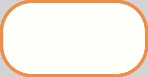

Jetpack Compose: Surface
20th April 2022
A surface is a fundamental component of the material design theme. The world we interact with is not 2-dimensional, objects have elevation and cast shadows. Surfaces allow us to represent some of those characteristics with the use of light and shadows.
This site is not concerned with delving into the depths of a topic it covers so I would suggest you read the material guidelines for a greater understanding.
@Composable
fun Surface(
modifier: Modifier = Modifier,
shape: Shape = RectangleShape,
color: Color = MaterialTheme.colors.surface,
contentColor: Color = contentColorFor(color),
border: BorderStroke? = null,
elevation: Dp = 0.dp,
content: @Composable () -> Unit)
Shape
This lets you set the shape of your surface. Obviously. There are a few ones you can choose to use with the default being a rectangle but you are able to make custom shapes but I won't be making anything crazy here.
Surface(shape = RoundedCornerShape(12.dp)){
Text(...)
Surface(shape = CircleShape){
Text(...)
}
Surface(shape = RoundedCornerShape(25.dp, 25.dp, 0.dp, 0.dp)){
Text(...)
}

Elevation
Elevation determines how much shadow is drawn below the surface but doesn't actually change its z-index. This can be used to bring emphasis to a particular UI component and give it a raised effect.
Surface(shape = RoundedCornerShape(12.dp)){
Text(...)
}
Surface(
modifier = Modifier.padding(start = 4.dp),
shape = RoundedCornerShape(12.dp),
elevation = 12.dp){
Text(...)
}
Surface(Modifier.padding(start = 4.dp), shape = RoundedCornerShape(12.dp)){
Text(...)
}

Border
Does it exactly what it says on the tin. A border.
Surface(
color = MaterialTheme.colors.surface,
border = BorderStroke(1.dp, OrangeHighlight), //Well, its a border
) {
Text(...)
}

Experimental versions
There are further features available to a surface but some of which are currently marked experimental. If / When they are marked stable and are useful enough I may cover them in more detail.